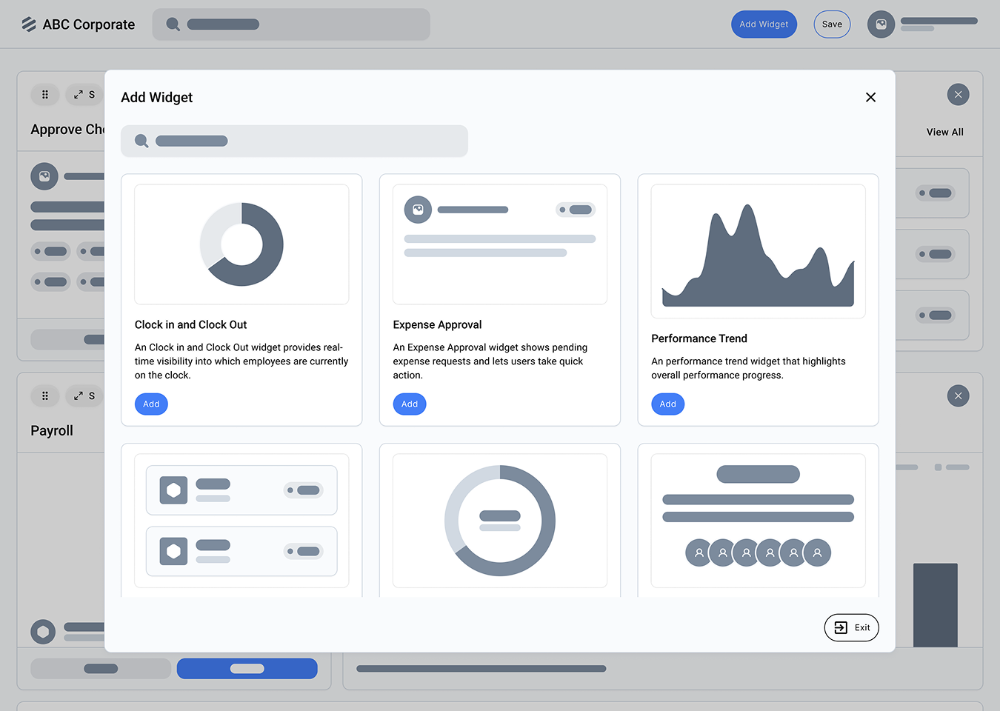
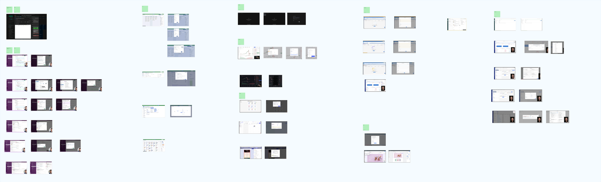
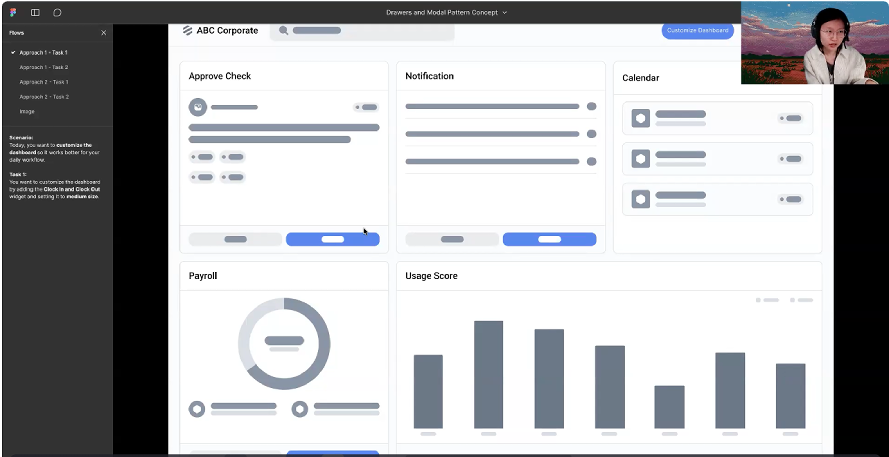
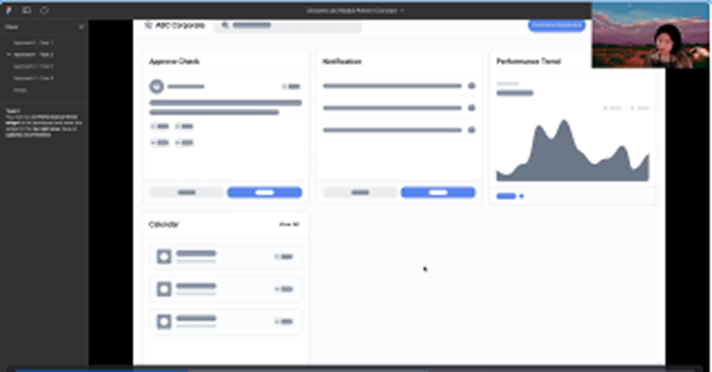
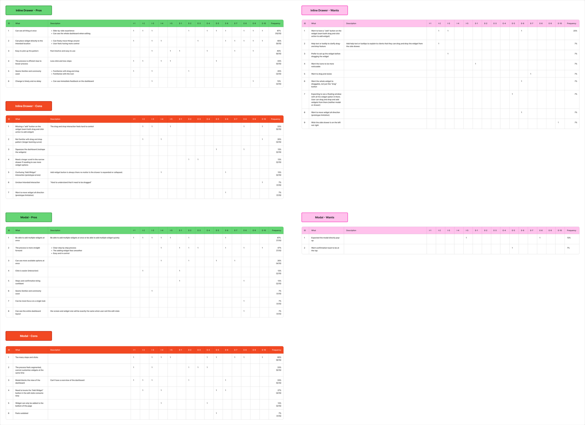
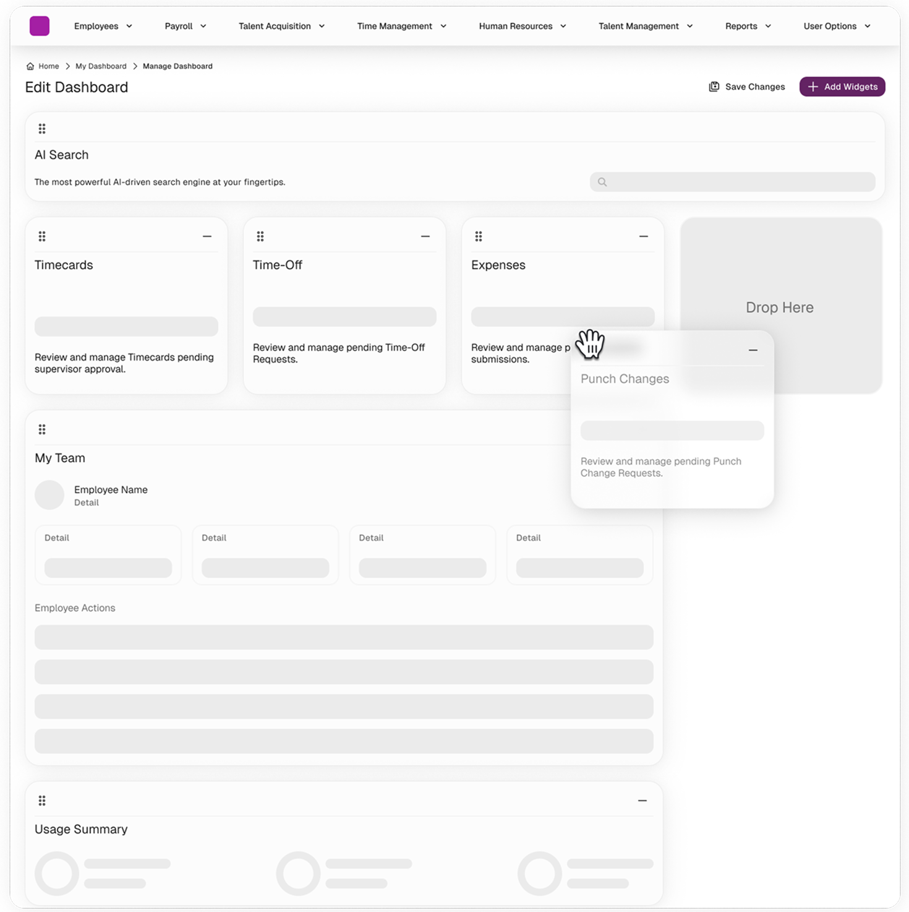
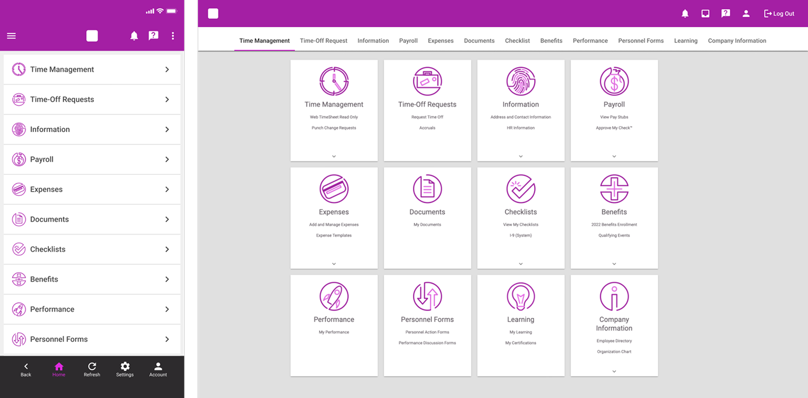
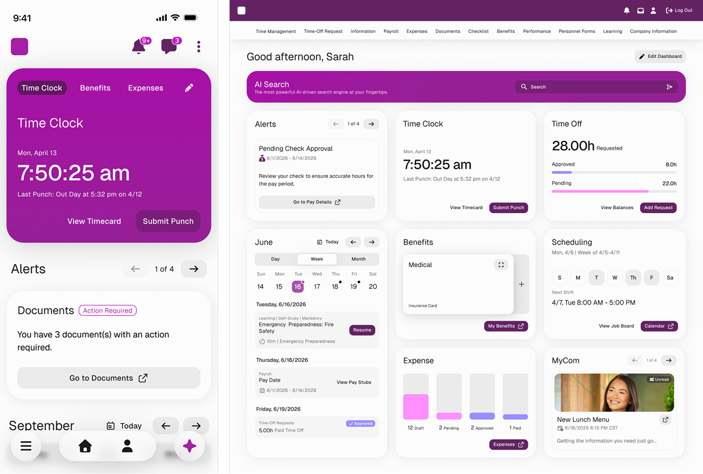

Inline drawer
Keep the dashboard in view and place widgets directly where they belong.

Usability research
Two ways to customize a dashboard. Which one feels easier to use?
01 / Before testing
We wanted to understand how people prefer to add, arrange, and resize dashboard widgets: alongside their dashboard, or in a separate modal.
Keep the dashboard in view and place widgets directly where they belong.
Choose widgets in a focused overlay, then return to the dashboard to arrange them.

The drawer could make placement and feedback more immediate, but it also compresses the dashboard. The modal offers a familiar, focused selection step, but separates adding widgets from arranging them. Testing would help us understand that trade-off.

02 / Testing
Over two weeks, we tested both approaches with five internal participants in moderated sessions and ten external participants in unmoderated sessions.
Add the Clock In and Clock Out widget and set it to medium.
Add Performance Trend, move it to the requested position, and save.
Rate ease and confidence, discuss friction, and choose a preferred approach.
UserTesting.com tasks and prompts, formatted for reading. Private prototype access details and editing notes are omitted.
Try the dashboard customization prototype and think aloud as you work. If you encounter a prototype issue, focus your feedback on the intended interaction.


03 / What we learned
12/15
participants preferred the inline drawer
Inline drawer 80% / Modal 20%
Participants valued seeing changes in context and placing widgets where they wanted. The modal felt familiar, but interrupted the flow with extra steps and a blocked dashboard.
The drawer was not friction-free: drag-and-drop needed clearer guidance and an alternative way to add widgets.
Reported average ease and confidence: drawer 4.76/5; modal 4.6/5. These are participant ratings, not measured task-time improvements.
Purpose: To evaluate and compare the Inline Drawer and Modal patterns for dashboard customization.
Participants and test method: 15 participants total. Five internal participants participated in moderated testing; ten external participants participated in unmoderated testing.
Timeline: Two weeks.
Average rating (ease and confidence): Inline Drawer 4.76/5; Modal 4.6/5.
Across 15 participants, the Inline Drawer pattern consistently outperformed the Modal in usability, efficiency, confidence, and overall preference. Approximately 80% of users favored the Drawer and only 20% preferred the Modal. Although some users noted a brief learning curve with drag-and-drop and occasional prototype lag, they still found the Drawer faster, more intuitive, and easier to control once they understood how it worked. Participants especially valued being able to see the full dashboard while customizing, place widgets exactly where they want (when initially added), drag and resize in real time, and view all widget options without leaving the page. Many described the Drawer experience as "smooth," "quick," "natural," and "modern," appreciating that they could stay in one space and maintain context throughout the process. In contrast, while the Modal was familiar and initially straightforward, it was ultimately disliked for blocking the page, adding extra clicks, slowing down the flow, and pulling the user's attention away from the dashboard.
Interpretation note: the summary above preserves the source report. References to speed and efficiency describe participant feedback; the supplied report does not include task-time measurements or statistical testing.
| Theme | Details | Frequency |
|---|---|---|
| Visibility | Users can see all things at once, with a side-by-side experience, and can see the whole dashboard when editing. | 67% (10/15) |
| Control | Users can place widgets directly to the intended location, move things around freely, and feel more in control. | 60% (9/15) |
| Efficiency | The process is efficient due to fewer steps and clicks. | 33% (5/15) |
| Timely feedback | Users can see immediate feedback on the dashboard. | 13% (3/15)* |
* Source discrepancy: the report lists 13% (3/15); the raw tally shows 2/15, which equals about 13%. Three out of fifteen would be 20%. The original report value is retained here pending reconciliation.
| Theme | Details | Frequency |
|---|---|---|
| Multiple widget addition | Users can add multiple widgets at once or quickly. | 47% (7/15) |
| Straightforward process | The process is more straightforward, with a clear step-by-step process. | 47% (7/15) |
| Widget options visibility | Users can see more available widget options at once. | 26% (4/15) |
| Easy interaction | Clicking is easier. | 13% (2/15) |
| Confidence | Steps and confirmation bring confidence to users. | 13% (2/15) |
| Focus on a single task | Users can focus on a single task. | 7% (1/15) |
| Dashboard layout | Users can see the entire dashboard layout, with the same screen and widget size when exiting the edit state. | 7% (1/15) |
Percentages above are reproduced as reported, including 26% for 4/15 (approximately 27% when rounded).
| Theme | Details | Frequency | Recommendation |
|---|---|---|---|
| Difficulty with drag-and-drop | The interaction feels hard to control, and some users are not familiar with the pattern. | 40% (6/15) | Include an "Add" button on each widget as an alternative to drag-and-drop. |
| Dashboard squeezing | The drawer squeezes the dashboard and reshapes the widgets, making them different from the completed version. | 13% (2/15) | Not specified. |
| Unclear interaction | Users find it hard to understand that widgets need to be dragged. | 7% (1/15) | Add clear instructions, like help text, to explain that users can drag and drop widgets to the main page. |
| Theme | Details | Frequency | Recommendation |
|---|---|---|---|
| Too many steps and clicks | The process has too many steps and clicks. | 60% (9/15) | Not specified. |
| Segmented process | The process feels segmented, and users cannot customize widgets at the same time. | 33% (5/15) | Not specified. |
| Blocked view | The modal blocks the view of the dashboard, making it hard to have an overview. | 33% (5/15) | Not specified. |
| Time-consuming | Locating the "Add Widget" button in the edit state consumes time. | 27% (4/15) | Make the modal open directly when the user first starts customizing the dashboard. |
| Limited placement | Widgets can only be added to the bottom of the page. | 13% (2/15) | Not specified. |
Based on the user testing results, the following recommendations focus on improving the inline drawer pattern, which was preferred by the majority of participants.
Adding a clear Add button on each widget allows users to add widgets directly without relying solely on drag-and-drop, while keeping the experience within the same working area. This supports users who prefer more explicit actions while still preserving the flexibility of drag-and-drop for experienced users.

04 / Outcome
The research informed the final solution. We recommended keeping the inline drawer, adding an explicit Add button, and making drag-and-drop easier to discover.

Visible drag handles and a defined drop target make the interaction easier to understand.
The recommendation was adopted in the final solution. No post-launch performance measurements are included in this study.

